01 / 20
Velvet Grid
Press to inflate; switch repulsion to attraction; spacing and porcelain/night palettes.
Original: Warped ↗Twenty existing OpenProcessing artworks, adapted from their real source code. Shape, draw, bend, stir and pose. Each work has its own controls and an independent offline upload file.
English UI · Touch & mouse · Individual HTML + ZIP
13 / Chromatic Breath: noncommercial source licence.
Press to inflate; switch repulsion to attraction; spacing and porcelain/night palettes.
Original: Warped ↗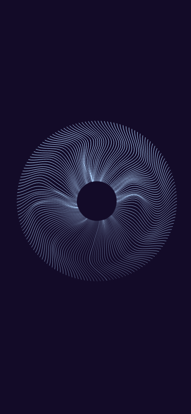
Explore ↗Drag to bend; hold to bloom; adjustable frond density and opal/ember ink.
Original: Organic ↗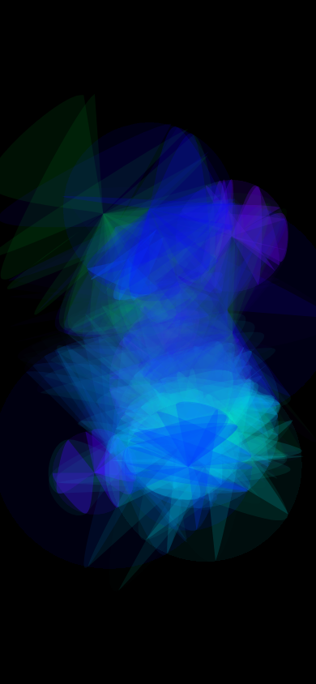
Explore ↗Drag a lens; hold to enlarge it; smooth/faceted modes, inversion, colour dial.
Original: Circles nebula ↗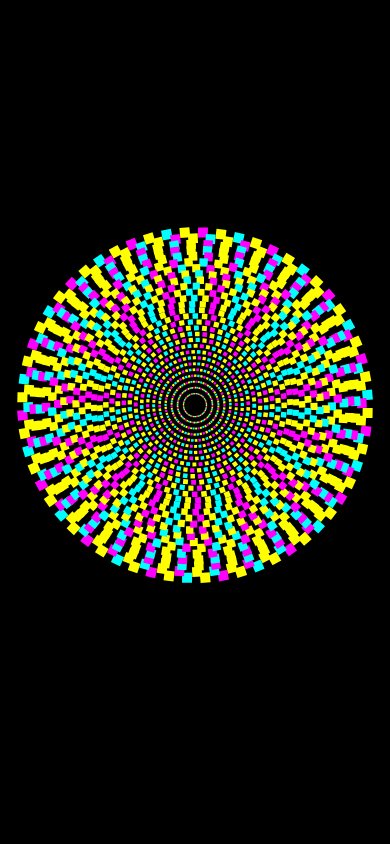
Explore ↗Scrub rotation by dragging; choose square/disc marks; reverse orbit and adjust tempo.
Original: Motion study ↗Sweep dust; attract or repel; hold to gather; flick to scatter; renew the pigment.
Original: Particle sandbox ↗Paint currents; stir or erase locally; ocean/sunset palettes; variable current speed.
Original: perlin sea colors ↗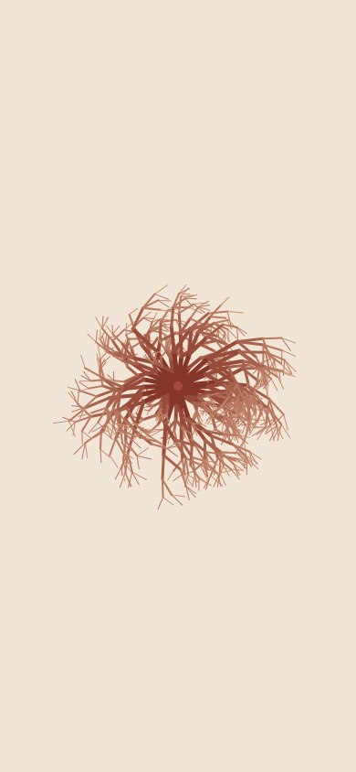
Explore ↗Brush branches to bend; tune spring strength; regrow the coral and change its mineral colour.
Original: T-Virus ↗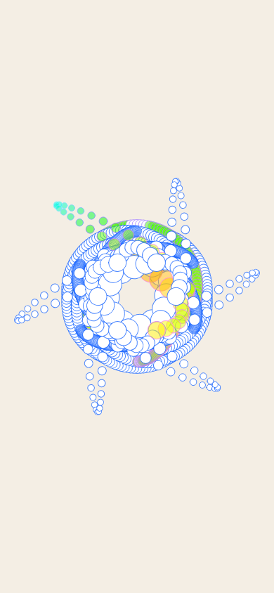
Explore ↗Draw mirrored glass; choose six/twelve/twenty-four slices; hold to grow a seal; clear or invert paper.
Original: Kaleidoscope ↗Draw luminous smoke; hold for a fountain; choose a colour band and adjust plume lifetime.
Original: Colorful smoke ↗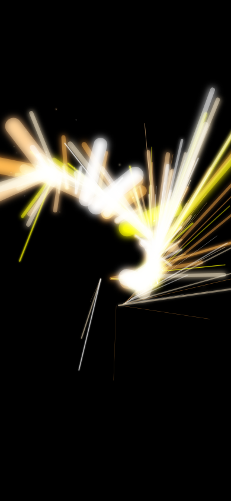
Explore ↗Flick to stretch threads; hold to build a spark fountain; select warm/cool pigments and density.
Original: Lines Brush ↗Drag to paint; hold to bloom; switch expansion/contraction and tune brush size.
Original: Alchemist’s brush ↗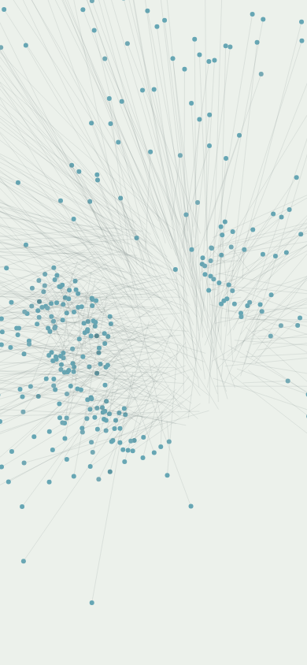
Explore ↗Scatter a pearl flower; hold to move its centre; burst then watch it reassemble; sea/rose palette.
Original: Repulsion ↗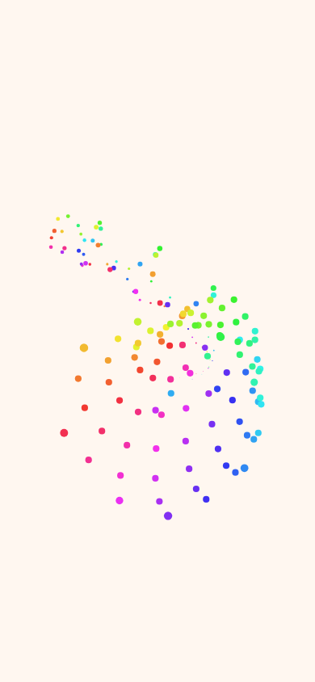
Explore ↗Move the emitter; hold for denser breathing; rainbow/rose colours, adjustable outward drift.
Original: Color Bubbles ↗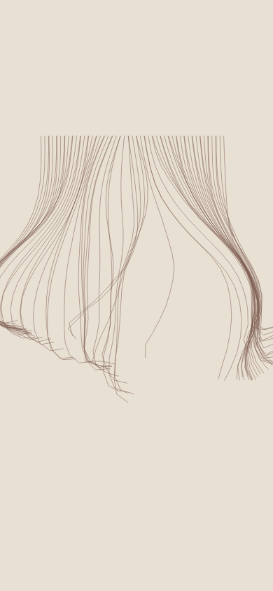
Explore ↗Comb the silk; grab and pull a strand; adjust gravity; change silk colour or rehang.
Original: Dynamic ropes 2 ↗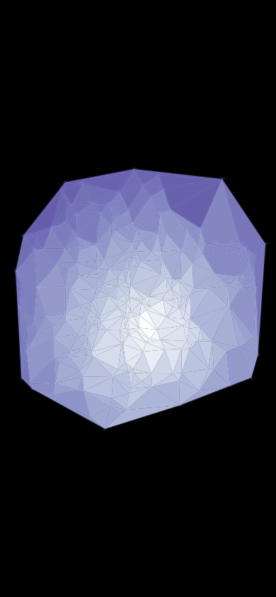
Explore ↗Drag the light; hold to widen its halo; freeze the facets; select mineral hues.
Original: Crystal in a spotlight ↗Draw your own flight path; release to follow it; change firefly hue, guide visibility and flight speed.
Original: Steering path following ↗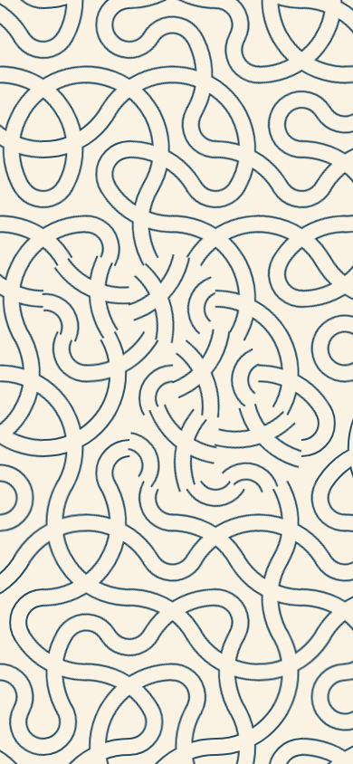
Explore ↗Tap a tile; drag a chain; rotate every tile in a wave; shuffle or change ink.
Original: Hexagon Pattern ↗Write your own word; drag the word and sea level; tune wave texture and paper colour.
Original: Hello Curves ↗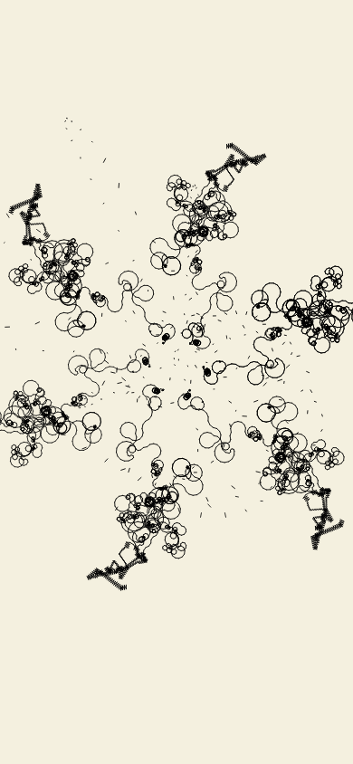
Explore ↗Plant a new seal by tapping; drag its symmetry centre; choose six/ten/sixteen folds, ink and growth speed.
Original: Symmetric Circular Random Walker ↗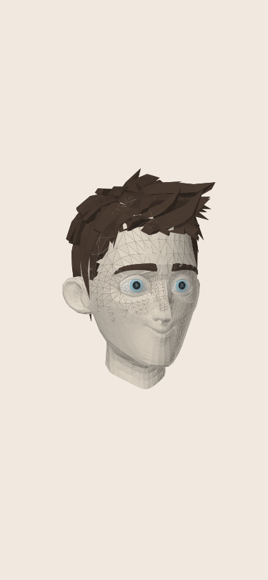
Explore ↗Drag face control points; pose smile/surprise/calm; porcelain/bronze materials and wireframe.
Original: Facial Rig ↗